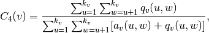
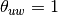
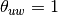
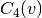
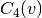

square_clustering¶
- square_clustering(G, nodes=None)[source]¶
Compute the squares clustering coefficient for nodes.
For each node return the fraction of possible squares that exist at the node [R159]

where
 are the number of common neighbors of
are the number of common neighbors of  and
and  other than
other than  (ie squares), and
(ie squares), and
 ,
where  if and are connected and 0 otherwise.
,
where  if and are connected and 0 otherwise.Parameters : G : graph
nodes : container of nodes, optional (default=all nodes in G)
Compute clustering for nodes in this container.
Returns : c4 : dictionary
A dictionary keyed by node with the square clustering coefficient value.
Notes
While
 (triangle clustering) gives the probability that
two neighbors of node v are connected with each other,  is
the probability that two neighbors of node v share a common
neighbor different from v. This algorithm can be applied to both
bipartite and unipartite networks.
(triangle clustering) gives the probability that
two neighbors of node v are connected with each other,  is
the probability that two neighbors of node v share a common
neighbor different from v. This algorithm can be applied to both
bipartite and unipartite networks.References
[R159] (1, 2) Pedro G. Lind, Marta C. González, and Hans J. Herrmann. 2005 Cycles and clustering in bipartite networks. Physical Review E (72) 056127. Examples
>>> G=nx.complete_graph(5) >>> print(nx.square_clustering(G,0)) 1.0 >>> print(nx.square_clustering(G)) {0: 1.0, 1: 1.0, 2: 1.0, 3: 1.0, 4: 1.0}